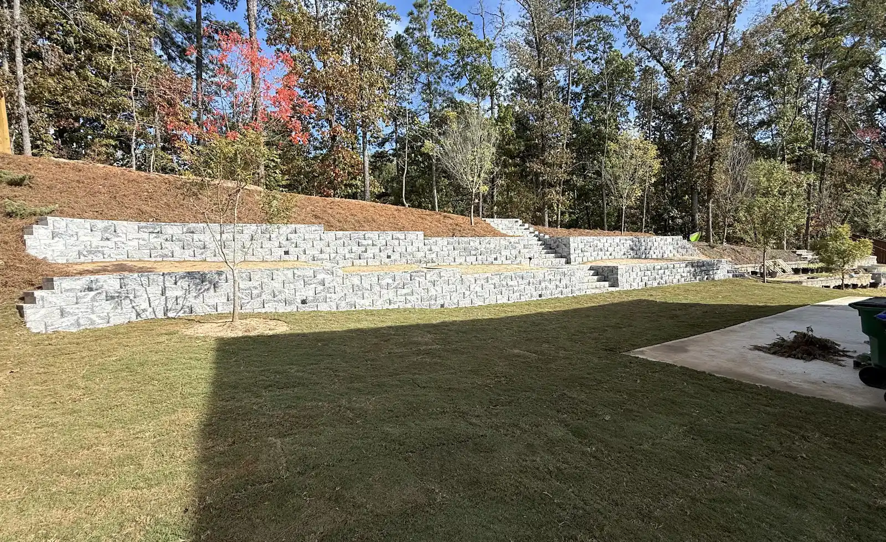

Retaining & seat walls
Segmental block and natural-stone walls that hold a slope, stop an erosion problem, or level a yard for a lawn or patio — built to take the load.

A design-build crew for retaining walls, stone patios, steps and drainage across Canton and Cherokee County — set on a proper base and graded to shed water, so the work still sits right seasons later.
T & J Landscaping and Design is a Canton-based design-build crew, building retaining walls, stone and paver patios, steps, walkways and drainage across Cherokee County. We start with the design — how the stone meets the house, how the grade wants to fall, where the water needs to go — before anyone picks up a shovel.
Then we build it the slow way: excavation, a compacted base, the right grade for drainage, and stone set by hand. It's the part no one photographs, and it's why an erosion problem stays fixed and a patio stays flat long after the crew has gone.
Every photo here is our own finished work — retaining walls, patios, steps, drainage and fire features. Select any project to view it larger.
Our own project photos, straight from our Google listing.
A straightforward path from the first look at your yard to the day you start using it.
We come look at the space, talk through what you're picturing, and work out how the stone, the grade and the drainage should come together.
You get a clear plan and a written estimate — layout, materials and price laid out up front, with no vague numbers.
We excavate, compact the sub-base, set the grade for drainage, and lay the stone or block by hand — the slow part, done right.
We finish the details, clean the site down, and leave you a wall, patio or walkway that's ready to use and built to stay put.
Outdoor stone, walls and grade from the first sketch to the final sweep — from a single retaining wall to a full backyard renovation. The same people who quote your job are the ones who build it.
Talk about your projectSegmental block and natural-stone walls that hold a slope, stop an erosion problem, or level a yard for a lawn or patio — built to take the load.
Irregular flagstone and paver patios set on a compacted base, with stone fire pits for a place to gather out back.
Natural stone steps and paver walkways that move you through the yard and stay flat and even underfoot.
Grading, dry river beds and drainage worked into the hardscape so runoff moves away from the house instead of down the hill.
Fresh sod, planting beds and stone borders to finish a project — the green that ties the stonework back into the yard.
“It’s all in the details…from start to finish. My wife and I couldn’t be happier with the complete backyard hardscape renovation that T and J designed and installed for us. I got quotes from ten different landscape companies that I found using different websites.”
“Just an amazing experience, always on time, excellent workmanship and kept us well informed. They took care of our erosion problem, put new stone steps and patio in and sodded”
“We also had John do a retaining wall for us that turned out great. They keep our yard looking great, Very good at taking attention to details.”
A retaining wall, a patio, a walkway, a drainage fix, or a whole backyard — give us a call or send an email and we'll set up a time to come look and put together an honest estimate. You'll reach the crew, not a call center.
204 Harbor Ridge, Canton, GA 30114